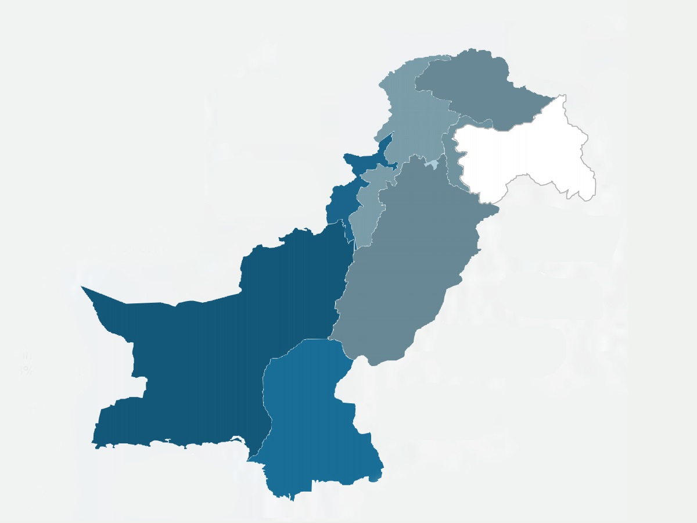

Analyzing Pakistan’s Economic and Social Indicators through World Development Index Data & Developing its GDP Predictive Model
Introduction
Data Science is giving us deep insights into different fields helping us to make better decisions in business, governance, economic and social domains. Moreover, making predictions using machine learning models help us to forecast and evaluate our future steps. In this article, we will use World Development Index Dataset to analyze Pakistan’s Social and Economic Indicators and will develop a model using sikit-learn to predict Pakistan’s GDP based on different indicators. Provided dataset contains data about 1429 Indicator’s from 1960 to 2019. We will try to answer following questions
How Military Expenditures of Pakistan have increased as compared to increased in GDP of Pakistan.
Does increase in population of Pakistan has any impact on its Inflation Rate.
Whether Pakistan has been able to control his government expenditures.
Develop a model to predict GDP of Pakistan.

Approach
We will use CRISP-DM (Cross Industry Standard Process for Data Mining) which involves following steps.
Business Understanding
Data Understanding
Data Preparation
Modeling
Evaluation
Deployment
After finalizing our Questions, we have to transform and clean our data in a form so that we could answer our questions.
Cleaning Data
We will take following steps to clean our data
Transpose Data, so that Indicators become columns of data
Rename Columns with Indicators name for easy access
Removing Country Name, Country Code Columns and Indicator Name and Indicator Code Rows from eliminating redundancy
For developing model, we will remove all rows containing even single Null value
Answering our questions
To answer our first three questions, we will store Pakistan’s GDP, Military Expenditures, Government Expenditures (all three in current USD) and Pakistan’s Population, Inflation Rate in separate variables as List. We will Plot
Pakistan’s GDP against Military Expenditure to answer first question
Pakistan’s Population against Inflation Rate for second question
Pakistan’s GDP and Government Expenditures for third question.
To develop our model, we will use Total Exports, Total Imports, GNS, GNE, Military Expenditures and Personal Remittances as X variable and GDP as Y variable. We will use Linear regression model with test_size=.15 and random_state=50.
Findings
Answer: We found that Military expenditures of Pakistan have increased very slightly when compared to increased in GDP as they show a very linear behavior.
Pakistan's GDP in Blue Line Military Expenditures in Orange Line
Answer: From the below graph we can conclude that there is not significant relationship between Population and Inflation of Pakistan. This is because the graph is very uneven. If there was a relation between these two, then the graph should have shown relatively linear behavior
Pakistan's Population on x-axis Inflation Rate on y-axis
Answer: From the below graph we can conclude Expenditures of Pakistan's Government have been greater than GDP of Pakistan for most of the time. Hence, we can conclude that Pakistan have always mismanaged its Budget.
Pakistan's GDP in Blue Line Government's Expenditures in Orange Line
Model: When tested our model to predict GDPs of Pakistan over last years against real GDPs, we were able to get following predictions.
Pakistan's Actual GDP in Blue Line Predicted GDP in Orange Line
Conclusion
We have seen that data science helps us a lot to easily conclude results based on historical data and make predictions for future. Although this model may still be improved for better predictions, it still helps a lot to make better calculated predictions.